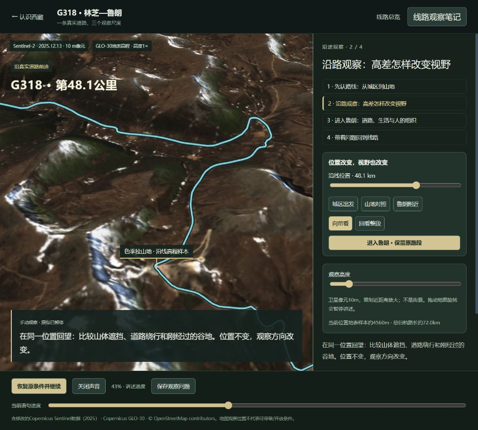
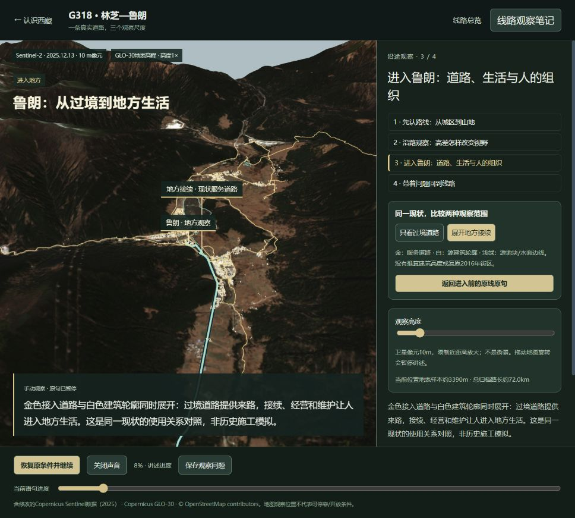

2026-10-19 · 第二阶段的一段完整往返
沿真实道路前进，
进入鲁朗，再回到原线。
六章继续提供整体认识。并列的线路体验先开放G318林芝—色季拉山地—鲁朗，沿山路观察高差与视野，在同一地形上进入地方，比较过境道路和地方接续，保存问题后返回原句。
约72公里是归档道路链的阅读长度；本段是带来源的卫星三维观察，不是街景、实时导航或可订行程。现有六章内容、录音和主线时长冻结。
这次补齐了什么
| 环节 | 实际呈现与操作 | 依据与边界 |
|---|---|---|
| 整体来路 | 同一地形上的林芝附近起点、山地与鲁朗；保留1147个原始道路顶点的转折。 | OSM归档节点、来源边与单行记录；末端是服务道路节点，未核实为公共访客入口。 |
| 沿线前进 | 讲述推动观察位置；拖动沿线位置、选择山地、原位回望、调整观察高度，看到位置和方向造成的不同视野。 | 真实卫星影像与GLO-30地表高程，高度1×。沿线最高样本不是山口实测标高；金点不是实际车辆。 |
| 进入鲁朗 | 同一张地形自然拉近，展开/收起实际地方道路、建筑轮廓与地块。服务道路接入与过境道路在同一空间比较。 | 现状OSM记录，没有编造建筑高度、施工顺序或2016年外观。2016试运营、2017经营组织的史料解释人的行动；不据此推算当前经营成效。 |
| 回到原线 | 保存进入前路段、语句、声音与观察条件；返回后继续，不强迫重复地方讲述。笔记可编辑、保存、刷新并返回。 | 线路独立存储，原有主线与观察计划不覆盖；只保存在当前站点、当前浏览器。 |
影像、地形和观察位置
使用2025年12月13日Sentinel-2真实彩色影像（原生10m像元），冬季雪面与阴影只代表该次拍摄。Copernicus GLO-30为约30m原始地表模型，网格显示间距约45—46m，包含林冠等地表物；不能当道路工程标高。限制近距离放大，避免把重采样当细节。
三个地图观察位置都有原始节点、坐标、高程采样方法和问题：观察位置档案。尚未核实实地安全停车、进入许可、营业与季节通行条件；不把地图阅读位置包装为旅游停靠推荐。
数据、哈希与许可 · 原始STAC项目。含修改的Copernicus Sentinel数据（2025）；Copernicus WorldDEM-30 © DLR e.V.2010–2014、© Airbus Defence and Space GmbH2014–2018，由EU/ESA提供；© OpenStreetMap contributors。
风景、生活与人文价值怎样相接
先通过沿路位置和回望理解真实高差、绕行与遮挡，再进入鲁朗看过境交通如何接到地方空间。2016试运营和2017经营组织记录说明：交通把人带到附近，地方生活与服务还依赖接续、经营、文化展示和共同维护。画面解释现状空间关系，史料说明有记录的行动，两者不冒充逐年重建。
收口范围与保留限制
本段的功能标准是一次可完成的“沿线前进—地方对照—原线继续—笔记保存返回”；语音、字幕、镜头与接续显示共同读取MiniMax原生逐字时间。四段讲述约2分30秒，属于独立线路，不追加六章时长。
开发者检查与首次用户理解分开记录。浏览器实播可以核查画面、进度与恢复；当前没有系统音频回听，不能据此宣布听感或所有发音已经验收。现有六章正式首次观看者仍为0/3，不用新增线路测试替代。
本次不增加其他景点、不制作假街景、不继续扩展模型。细节更丰富的地方影像、实地进入条件、更多沿途生活案例，待这一段的用户反馈后另定范围。
实际画面与核查

